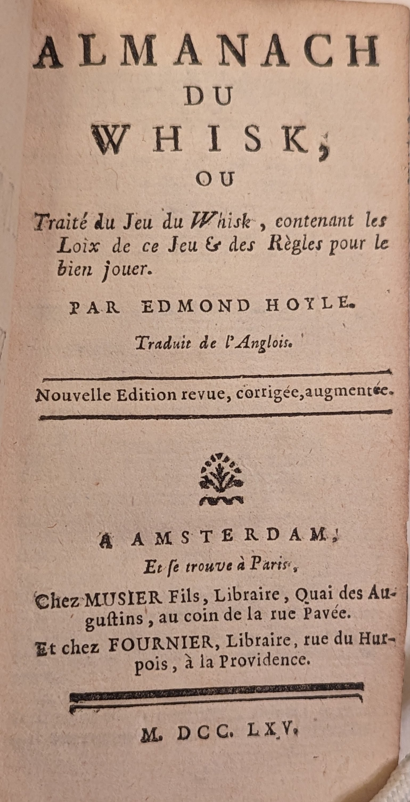

A Descriptive Bibliography of Edmond Hoyle
Copyright © 2014-26 by David Levy
(page updated 2026-03-20)User Guide
Musier.Whist.Fr.1765
Almanach du Whisk, Chez Musier Fils, 1765.
 |
Title: |
ALMANACH | DU | WHISK, | OU | Traité du Jeu du Whisk, contenant les | Loix de ce Jeu & des Règles pour le | bien
jouer. | PAR EDMOND HOYLE. | Traduit de l'Anglois. | [rule] | Nouvelle Edition revue, corrigée, augmentée. | [rule] | [tailpiece] | A AMSTERDAM,
| Et ſe trouve à Paris, | Chez MUSIER Fils, Libraire, Quai des Au-|guſtins, au coin de la rue Pavée. | Et chez
FOURNIER, Libraire, rue du Hur-|pois, à la Providence. | [oxford rule] | M. DCC. LXV. |
| Collation: |
24o: A–C12 D12(−D11,12) [$½ (−A2,3,4,5) signed]; 46 leaves, pp. [1–10] 11–92 |
| Half Title: |
ALMANACH | DU | WHISK. |
| Contents: |
Signature (Page) Reference |
Contents |
Signature (Page) Reference |
Running Titles |
| A1r (1) |
half title |
|
|
| A1v (2) |
blank |
|
|
| A2r (3) |
title |
|
|
| A2v (4) |
blank |
|
|
| A3r–A5v (5–10) |
Almanach |
|
|
| A6r–D10v (11–92) |
‘[row of type orn] | Traité du Jeu du Whisk, [...] | [...]’ |
|
|
| Publisher: |
Chez Musier fils, Chez Fournier |
| References: |
Depaulis 98 |
| Copies Seen: |
O [Jessel g.116]; Levy [2007]; Levy [2115] |
Home